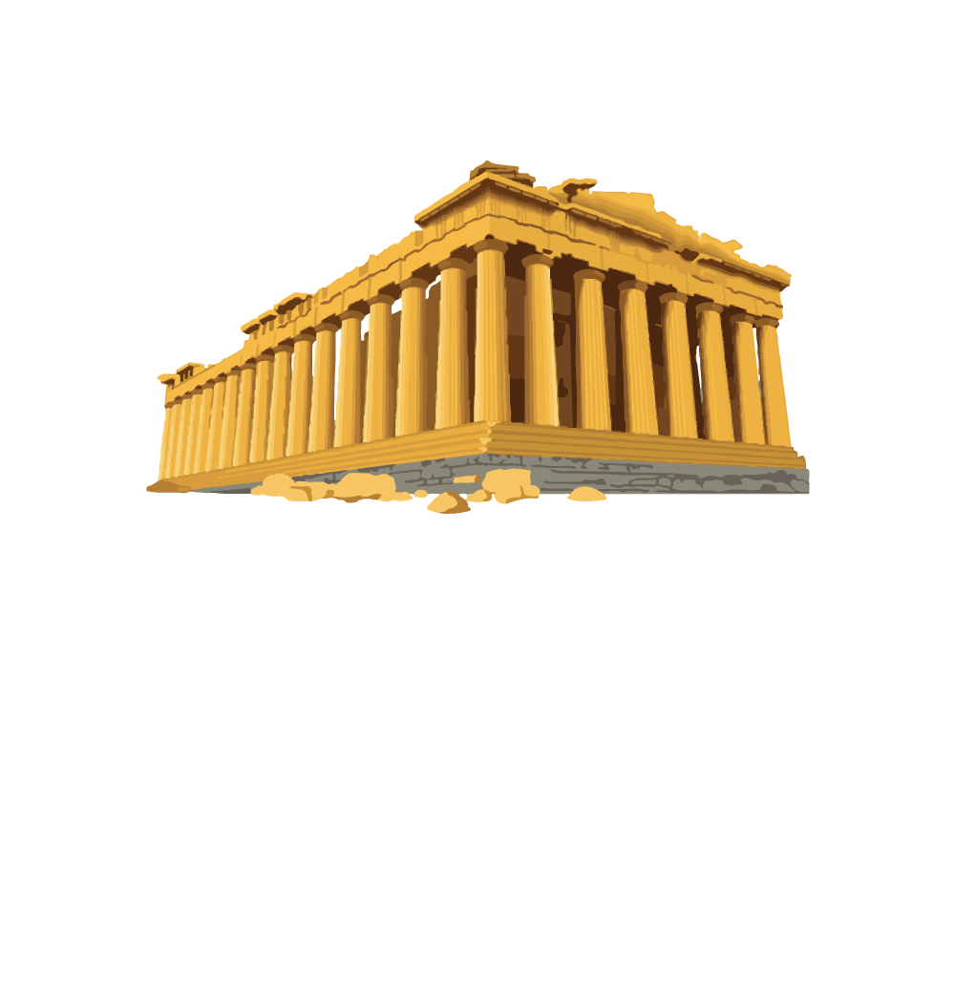
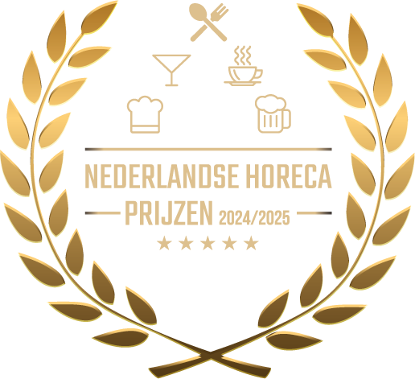
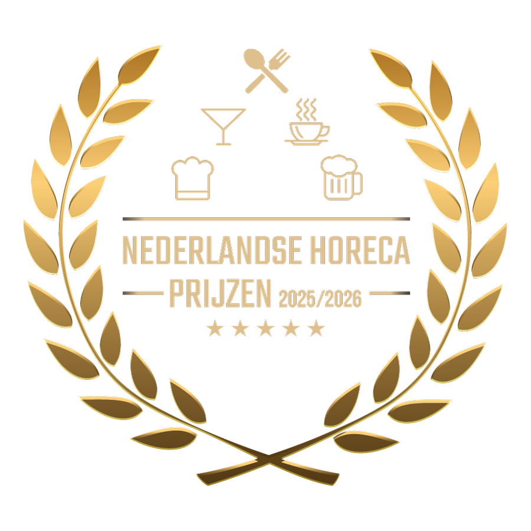
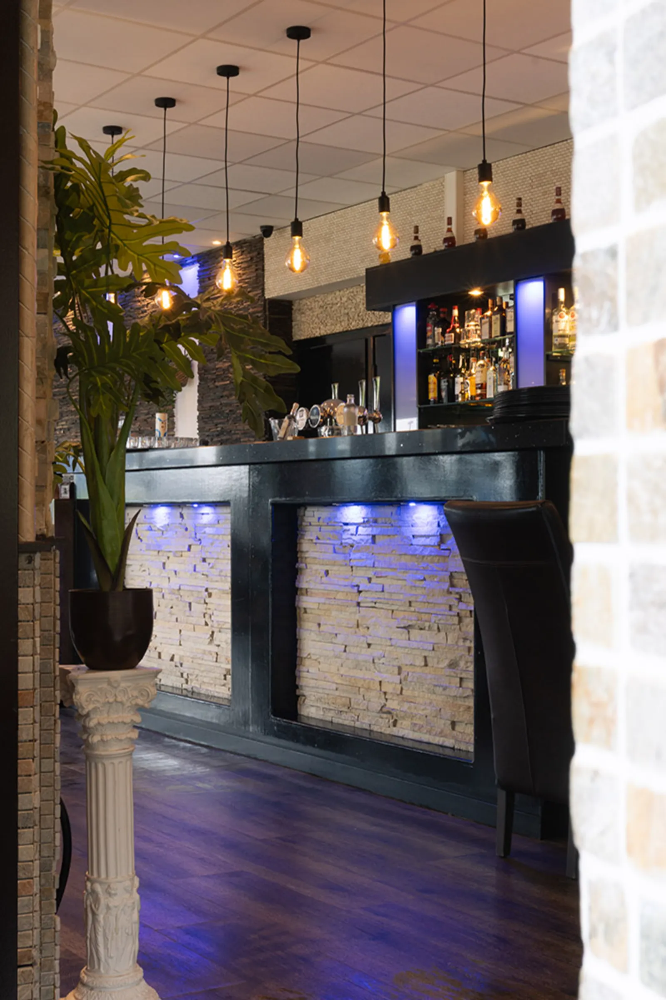

Griekse specialiteiten in de haven van Zeewolde
Welkom in de haven van Zeewolde, waar u in Griekse sferen helemaal tot rust kunt komen. Een familiebedrijf, met een ruim terras en uitzicht op de haven.
Dinsdag t/m zondag 17:00 - 22:00 · maandag gesloten


Provinciewinnaar Flevoland
Voor de Nederlandse Horeca Prijzen 2024/2025 én 2025/2026.
Over Irodios
In 2007 begon ons verhaal, toen mijn vader, vol passie voor de Griekse keuken, het eerste Irodios-restaurant opende in Utrecht.
Met zijn unieke gerechten en warme gastvrijheid wist hij al snel een vaste plek te veroveren in het hart van onze gasten. Na vijf succesvolle jaren groeide het verlangen om iets bijzonders op te bouwen, en in 2012 verhuisden we naar het prachtige Zeewolde. Hier vonden we de perfecte locatie: een ruimte met uitzicht op de haven en een groot terras waar onze gasten kunnen genieten van de authentieke Griekse sfeer.
In de loop der jaren ben ik steeds meer betrokken geraakt bij het familiebedrijf. Wat begon als meehelpen in de keuken en de bediening, groeide uit tot een gedeelde visie en verantwoordelijkheid. Samen met mijn vader hebben we Irodios opgebouwd tot wat het vandaag is: een plek waar familie, traditie en kwaliteit centraal staan. Nu ik het stokje mag overnemen, voel ik me vereerd om de naam Irodios voort te zetten en onze gasten dezelfde liefde en authenticiteit te bieden die mijn vader hier heeft neergelegd.
- 2007 Het eerste Irodios opent in Utrecht
- 2012 Verhuizing naar de haven van Zeewolde
- Nu De zoon neemt het stokje over van zijn vader
Ons geweldige team
Achter het succes van Irodios staat een team dat voelt als familie. Elk lid van ons team brengt iets unieks mee, of het nu gaat om de zorgvuldige bereiding van onze gerechten, de warme ontvangst bij de deur of de persoonlijke aandacht aan tafel. Samen zorgen we ervoor dat elke gast zich thuis voelt en een onvergetelijke ervaring beleeft.
Met trots kijken we terug op de vele momenten die we hebben mogen delen met onze gasten, van gezellige diners tot feestelijke evenementen. Onze kracht ligt in teamwork en een gedeelde passie voor gastvrijheid. Want bij Irodios doen we het samen, voor onze gasten en met elkaar.
Team Irodios
Vier kerst bij Irodios
Op 25 en 26 december 2026 verwelkomen wij u graag voor een sfeervolle kerst vol Griekse gastvrijheid en heerlijke gerechten.
Vier de kerstdagen samen met familie en vrienden bij Restaurant Irodios. Speciaal voor de feestdagen serveren wij een feestelijk samengesteld kerstmenu.
Reserveer een tafel voor kerst
Griekse gourmetschotel
Met de Griekse gourmetschotel van Irodios haal je de smaken van de Griekse keuken naar je kersttafel.
Perfect voor 2 personen, met alles wat je nodig hebt voor de beste gourmetervaring. Bel of mail ons om je gourmetschotel te reserveren.
Catering & evenementen
Griekse gastvrijheid voor ieder speciaal moment
Bij Restaurant Irodios draait alles om gastvrijheid, smaak en beleving. Naast ons restaurant verzorgen wij ook professionele catering voor bedrijven, bruiloften en grote privé-evenementen. Van intieme diners tot grootschalige feesten: wij zorgen dat ieder detail klopt.
Of het nu gaat om een bedrijfsfeest, jubileum, bruiloft, receptie of verjaardag, wij bieden een compleet verzorgde ervaring.
Catering op locatie
Wij leveren niet alleen gerechten, maar kunnen ook bediening en aankleding verzorgen.
Diverse mogelijkheden
Van luxe hapjes en schalen tot uitgebreide buffetten of complete diners.
Onze eigen locatie
Vier uw feest of evenement bij ons: een prachtige ruimte met uitzicht op de haven en een ruim terras, ideaal voor grotere gezelschappen.
Maatwerk
Wij luisteren naar uw wensen en stellen samen een menu of arrangement op dat past bij de gelegenheid.
Waarom Irodios catering?
- Professionele aanpak: jarenlange ervaring in zowel restaurant als catering.
- Flexibiliteit: geschikt voor kleine gezelschappen én honderden gasten.
- Authentieke Griekse keuken: altijd vers bereid met de beste ingrediënten.
- Volledige ontzorging: wij regelen het eten, de service en desgewenst ook de organisatie van de avond.
- Prachtige locatie: ons restaurant is beschikbaar voor feesten en evenementen.
Samen zorgen we voor een onvergetelijke ervaring, met de smaken en gastvrijheid van Griekenland.
Wij maken graag een vrijblijvende offerte die aansluit bij uw wensen en budget.
Vraag een offerte aanLive Griekse muziek
Tijdens onze speciale live muziekavonden brengen muzikanten de sfeer van Griekenland tot leven. Terwijl de muziek speelt, geniet u van onze menukaart met Griekse gerechten, bereid met verse ingrediënten en volgens traditionele familierecepten. Een moussaka, een sappige souvlaki of een schaal vol mezze om te delen: de perfecte aanvulling op deze feestelijke avonden.
Vraag ons naar de volgende avond met live muziek en reserveer op tijd.
Contact
Strandweg 1193891 AJ Zeewolde
| Maandag | gesloten |
|---|---|
| Dinsdag | 17:00 - 22:00 |
| Woensdag | 17:00 - 22:00 |
| Donderdag | 17:00 - 22:00 |
| Vrijdag | 17:00 - 22:00 |
| Zaterdag | 17:00 - 22:00 |
| Zondag | 17:00 - 22:00 |
De keuken is open tot 21:30. Telefonisch dagelijks bereikbaar van 14:00 tot 22:00.